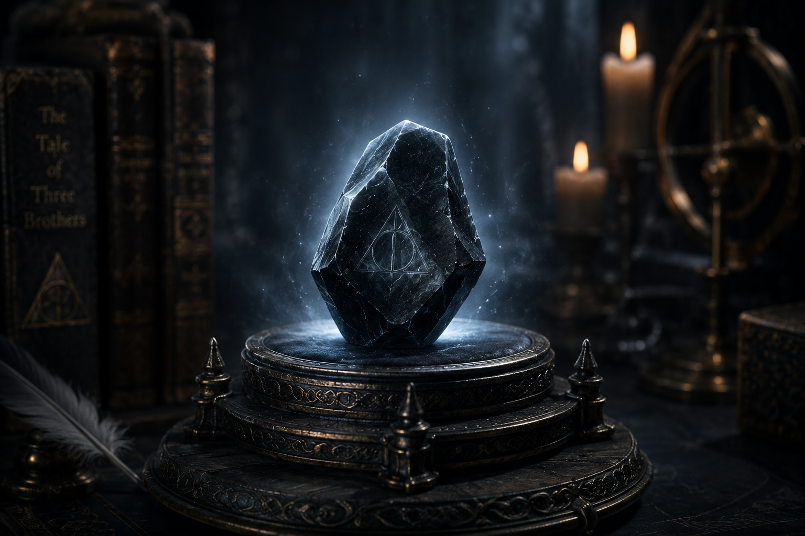

THE TALE OF THE THREE BROTHERS
Long ago, three brothers of the Peverell family—Antioch, Cadmus, and Ignotus—were traveling along a lonely, winding road at twilight. They reached a treacherous river, too deep to wade and too dangerous to swim. Being skilled in the magical arts, the brothers simply waved their wands and conjured a bridge across the treacherous water.
Before they could cross, they found their path blocked by a hooded figure. It was Death himself. Angry that he had been cheated out of three new victims, Death cunningly pretended to congratulate the brothers on their magic. As a reward for their cleverness, he offered each brother a prize of their choosing, creating the legendary Deathly Hallows.

THE ELDER WAND
The Elder Wand, also known as the Deathstick or the Wand of Destiny, was the first of the Deathly Hallows created by Death and bestowed upon Antioch Peverell. Fashioned from the branch of an elder tree with a core of Thestral tail hair, it is renowned as the most powerful wand in existence.
Throughout history, the wand has left a bloody trail, changing hands through murder and defeat. Unlike ordinary wands, the Elder Wand holds true allegiance only to power, instantly bonding to whichever wizard bests its previous master in combat. Its tragic history is inextricably linked to the pursuit of absolute supremacy.
THE RESURRECTION STONE
One of the three Deathly Hallows, the Resurrection Stone was forged by Death himself from a river stone for Cadmus Peverell. Legend tells of its power to recall loved ones from beyond the Veil—not truly alive, but as shades trapped between worlds.
The stone, once set within the Gaunt family ring, bears the Peverell sigil—the symbol of the Hallows—and is said to have driven its original owner to despair through longing and grief. Its history is entwined with the Peverell lineage and the dark pursuit of mastery over mortality.


THE INVISIBILITY CLOAK
The third and final Hallow, the Cloak of Invisibility, was given to the youngest brother, Ignotus Peverell. According to legend, Death cut a portion of his own cloak so that Ignotus could hide from him until he had attained a great age, at which point he greeted Death as an old friend.
Unlike standard invisibility cloaks—which fade over time or are vulnerable to revealing spells—the true Cloak endures eternally, rendering its wearer completely hidden from normal sight and magical detection. Passed down through generations to the Potter family, it stands as the only Hallow used for protection rather than power.